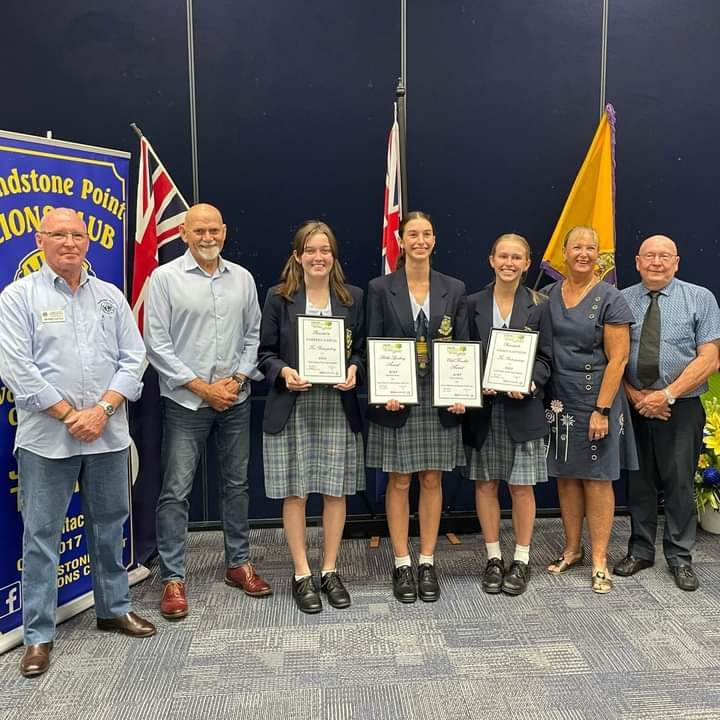
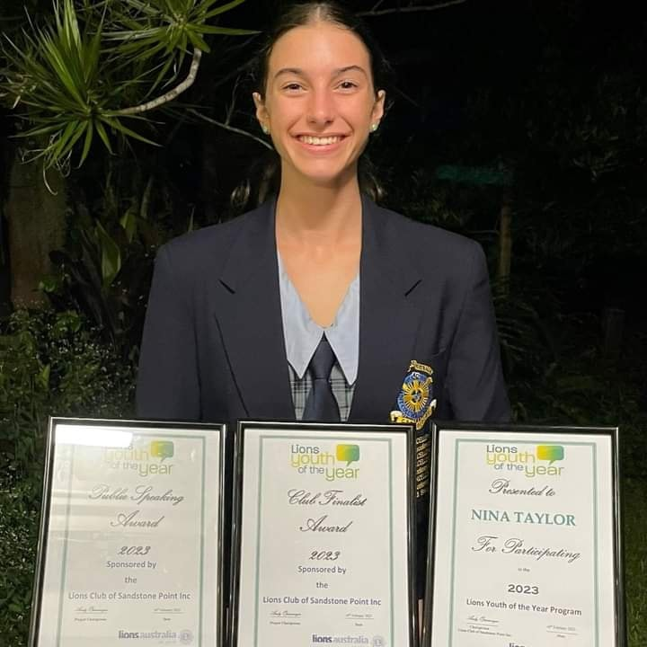
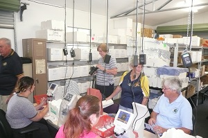
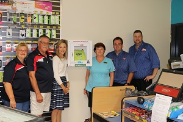

CLUB PROJECTS :
Check out our Club's Projects below.
YOUTH OF THE YEAR :
A LIONS public speaking program for year 11 and 12 students. Students speak for 5 minutes on a subject of their choice and then 2 minutes on impromptu current affairs questions. The competition progresses through Club, Zone, District, State and National Level. Members of the Public are welcome to come along and listen to the students speak. Our Club is proudly associated with St Columban's College, Cabooluture.


Congratulations and well done to Nina Taylor, Grace Gatfield, Gabrielle Seaby and Carrera Garcia from St Columbans
College who participated in the 2022 Youth of the Year for our Club. Nina Taylor was both the Overall Winner and the Public Speaking Winner and we wish her good luck at the Regional Final in February 2023.
BRIBIE ISLAND KIDS EDUCATION SUPPORT (BIKES)
AUSTRALIA DAY CLEAN UP:
Once a year members gather together to clean up the local area.
BRIBIE ISLAND AND DISTRICT NEIGHBOURHOOD CENTRE
RECYCLE FOR SIGHT :
A Lions project where volunteers assist in the cleaning and grading of glasses to be send overseas. Three of our members regularly attend each week.

LIONS MEDICAL RESEARCH FOUNDATION
LOCAL STATE PRIMARY AND SECONDARY SCHOOLS
BRIBIE ISLAND SCHOOL CHAPLAINS
COUNGEAU HOUSE (TOC H) BRIBIE ISLAND
LIONS CAMP DUCKADANG YOUTH CAMP :
LIONS PEACE POSTER
LIONS DISASTER RELIEF
LOCAL HOMELESSNESS AND DOMESTIC VIOLENCE VICTIMS
BRIBIE ISLAND LITTLE ATHLETICS
LIONS YOUTH EMERGENCY ACCOMMODATION CENTRE
DEFIBRILLATER DONATED TO LOCAL SHOPPING CENTRE :
Our Club recently, at the request of the local medical centre, and with thanks to a grant for 50% of purchase price to Australian Lions Foundation, recently installed at defibrillator in IGA, Sandstone Point. The attached photo shows Secretary Andy Fitzgerald, President Len Dawber and Councillor and Member Brooke Savige presenting the defibrillator to Lorraine from medical centre, Jason (store manager) and Adrian from IGA.

LIONS NATIONAL PROGRAMS :
Check out the National Lions Projects below.
LIONS CHILDREN'S MOBILITY FOUNDATION
LIONS EYE HEALTH PROGRAM
LIONS DIABETES FOUNDATION
LIONS HEARING DOGS
LIONS CHRISTMAS CAKES & PUDDINGS
AUSTRALIAN LIONS FOUNDATION DISASTER RELIEF
LIONS CHILDREN'S CANCER RESEARCH FOUNDATION
LIONS CLUBS INTERNATIONAL FOUNDATION
Community Service
Lions are people who get involved in humanitarian efforts locally, nationally, and internationally.
People like you can find community service and volunteer opportunities in Lions through:
- Mentoring
- Leadership Development
- Medical Research Fundraising
- Disaster Relief
If you would like to serve your community, through the many volunteer opportunities in Lions, here is a little more information about joining lions.
 Follow us on Facebook
Follow us on Facebook